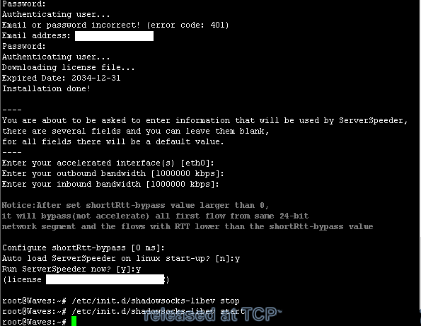
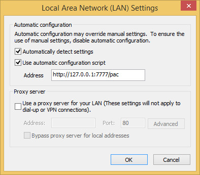

Setting up shadowsocks proxy to visit Google FB and etc.
(Considering the Wall’s ability to block keyword, this column will evade sensitive words and be writen in English.)
You know, we are often stuck in the life, even in the Internet.
As a heavy Internet user, I need to visit Google, Android Developer and Github sites by high frequency. But these sites cannot be accessed normally in my country.
After comparing the advantages and disadvantages of many solutions, I choose to set up shadowsocks proxy on foreign server.
I will share my experience on passing each stage. Hope it works for you.
Catalogue
- Wiki
- Server Side Install
- Configure and start the service
- Optional: Optimizing Shadowsocks
- Optional: Optional: Zeta-TCP
- Clients on Windows
Wiki
A foreign server is required firstly. I choosed a VPS which region of DigitalOcean server is San Francisco.
Recommended VPS:
DigitalOcean Provide cloud hosting in the US and Singapore, Low-cost, Default Support for TCP Hybla, take Paypal.
Linode Provide cloud hosting in Japan and the US, High Bandwidth
Shadowsocks-libev is a lightweight secured socks5 proxy for embedded devices and low end boxes.
You can visit official site at github.com/shadowsocks/shadowsocks-libev to see more introduction.
Cow is HTTP proxy and written in Go. It can automatically identify blocked sites and use parent proxies to access.
Official website: github.com/cyfdecyf/cow
TCP Hybla is a TCP enhancement for heterogeneous networks.
Server Side Install
Debian & Ubuntu
Build package from source
apt-get install build-essential autoconf libtool libssl-dev gawk debhelper git
git clone https://github.com/madeye/shadowsocks-libev.git
cd shadowsocks-libev
dpkg-buildpackage -us -uc
Install shadowsocks-libev
cd ..
dpkg -i shadowsocks-libev*.deb
Install supervisor
apt-get install supervisor
Configure and start the service
Edit the shadowsocks-libev configuration
vi /etc/shadowsocks-libev/config.json
With the following content:
1 | { |
Edit the supervisor configuration
vi /etc/supervisor/conf.d/shadowsocks-libev.conf
With the following content:
1 | [program:shadowsocks-libev] |
If the server_Port < 1024 in config.json, change user=nobody to user=root.
Restart the supervisor
service supervisor restart
supervisorctl reload
After edit any files on /etc/supervisor/*, update supervisor configuration:
supervisorctl update
Make sure if shadowsocks-libev is listening to the correct port:
netstat -lnp
Optional: Optimizing Shadowsocks
Debian & Ubuntu
Create /etc/sysctl.d/local.conf with the following content:
1 | # max open files |
Then:
sysctl --system
Warning: DO NOT ENABLE net.ipv4.tcp_tw_recycle!!!
If you use Supervisor, make sure you have the following line in /etc/default/supervisor:
ulimit -n 51200
Once you added that line, restart Supervisor
service stop supervisor && service start supervisor
See more info at the Sourse: Optimizing-Shadowsocks
Optional: Zeta-TCP
Now, Serverspeeder provid a free Zeta-TCP service. We can deploy it on our server to improve the end-to-end performance of TCP.
Install
wget http://my.serverspeeder.com/d/ls/serverSpeederInstaller.tar.gz
tar xzvf serverSpeederInstaller.tar.gz
bash serverSpeederInstaller.sh
Input your Serverspeeder account and press Enter to keep default for others settings during the installation process.

Some configuration
vi /serverspeeder/etc/config
rsc=”1”, RSC 网卡驱动模式
advinacc=”1”, 流量方向加速
maxmode=”1”, 最大传输模式
Restart service
/serverspeeder/bin/serverSpeeder.sh stop
/serverspeeder/bin/serverSpeeder.sh start
Clients on Windows
Edit rc.txt (Windows) with the following content:
1 | # 本地 HTTP 代理地址 |
Then, open Internet Explorer, click on Tools, Internet Options.
After seeing the Internet Options window, click on Connections, LAN settings.
Checked Use automatic configuration script, fill in Address box with the following content:
http://127.0.0.1:7777/pac
Peference picture

Closed.